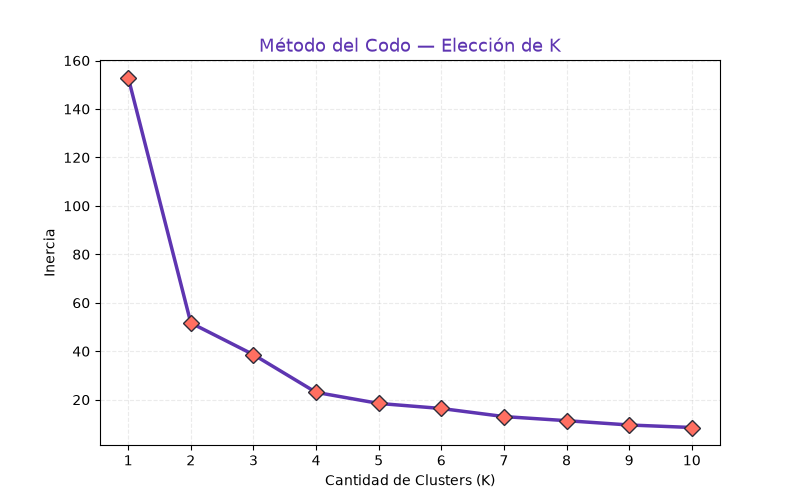
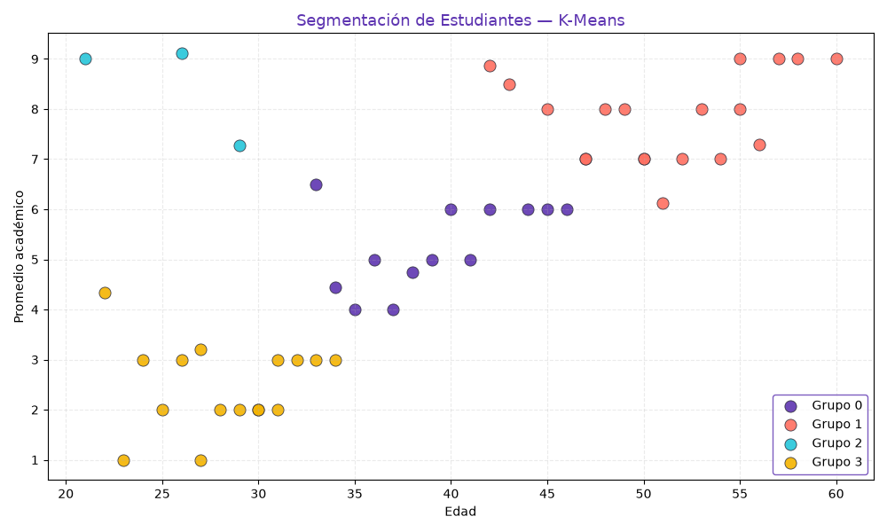

Este documento acompaña al script kmeans_estudiantes_llanes.py y al notebook K-Means-Estudiantes-Llanes.ipynb. Se aplicó el algoritmo K-Means para segmentar 50 estudiantes universitarios según edad, horas de estudio semanales y promedio académico. El número de clusters se fijó en K = 4, coincidiendo con el codo del gráfico de inercia y con la consigna del trabajo.
K-Means es un método de aprendizaje no supervisado que particiona un conjunto de datos en K grupos minimizando la inercia: la suma de distancias al cuadrado entre cada observación y el centroide de su cluster. Cuanto menor es la inercia, más compactos son los grupos.
La paleta usada en todo el proyecto es:
| Rol | Color | Hex |
|---|---|---|
| Primario | Púrpura | #5e35b1 |
| Secundario | Coral | #ff6f61 |
| Acento | Turquesa | #26c6da |
| Cuarto cluster | Amarillo | #f4b400 |
50 registros con los campos edad (int, 21–60), horas_estudio (int, 2–15) y promedio_academico (float, 1.0–9.11). Fuente: conjunto sintético provisto por la cátedra.
Se aplica StandardScaler para que las tres variables contribuyan equitativamente:
X = df[["edad", "horas_estudio", "promedio_academico"]].values
escalador = StandardScaler()
X_esc = escalador.fit_transform(X)Se calcula la inercia para K entre 1 y 10 y se grafica con la paleta púrpura/coral:
inercias = []
valores_k = range(1, 11)
for k in valores_k:
km = KMeans(n_clusters=k, random_state=42)
km.fit(X_esc)
inercias.append(km.inertia_)
plt.plot(valores_k, inercias,
marker="D", color="#5e35b1",
linewidth=2.5, markersize=8,
markerfacecolor="#ff6f61",
markeredgecolor="#2d2d3a")
modelo = KMeans(n_clusters=4, random_state=42)
df["cluster"] = modelo.fit_predict(X_esc)Los cuatro clusters se pintan con la misma paleta del script:
paleta = {0: "#5e35b1", 1: "#ff6f61", 2: "#26c6da", 3: "#f4b400"}
plt.scatter(grupo["edad"], grupo["promedio_academico"],
color=paleta[c], s=90,
edgecolor="#2d2d3a", linewidth=0.6)
| Cluster | Perfil | Interpretación |
|---|---|---|
| 0 · púrpura | Jóvenes, muchas horas de estudio, promedios bajos | Principiantes esforzados |
| 1 · coral | Mediana edad, horas moderadas, promedios medios | Perfil estable |
| 2 · turquesa | Mayores, pocas horas, promedios altos | Experimentados |
| 3 · amarillo | Jóvenes, pocas horas, promedios bajos | Desmotivados |
El pipeline permitió identificar cuatro perfiles estudiantiles con implicancias pedagógicas directas (tutorías, grupos de apoyo, mentorías). Como líneas futuras se propone:
| Archivo | Contenido |
|---|---|
kmeans_estudiantes_llanes.py | Script ejecutable desde consola |
K-Means-Estudiantes-Llanes.ipynb | Notebook con celdas explicativas |
codo_estudiantes.png | Método del codo |
grafico_estudiantes.png | Scatter de clusters |